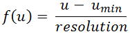
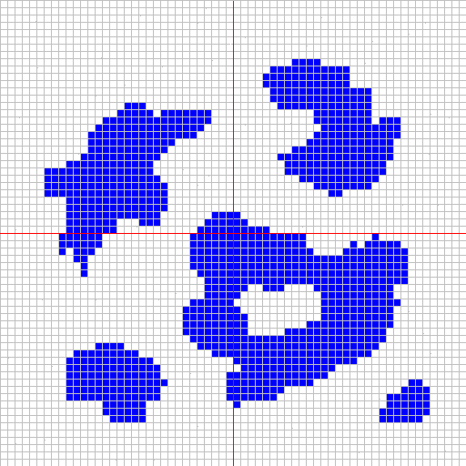
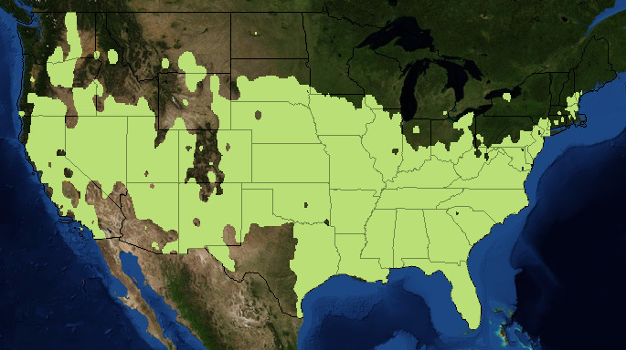

An OpenLayers map with animated layers from GeoServer
Index
About
When I first heard about WMS animations on GeoServer I was very curious to test how CQL and animated WMS could be combined to create interesting results. The one thing I wanted to test the most was whether I could use CQL to single out interpolated temperature bands and see them evolving in function of time. I don't want to simply animate a series of rasters because they will contain all bands and CQL will be of no use. To isolate each temperature band, I will need each band to be available in the form of a polygon. Once converted to polygons, these can be published on GeoServer, where I can use the WMS animator and CQL to animate a specific temperature band.
Requirements
- A modern (post 1.4) JDK
- Maven
- PostgreSQL with PostGIS
- GeoServer 2.6 or above
- Experience with Java, Hibernate, GeoTools, GeoServer and GIS concepts (polygons, rasters, geometry data structures, interpolations)
Obtaining temperature data from NCDC
NCDC is a great source for this kind of demonstration because their datasets provide the 3 requisites for our animated interpolation:
- The location of weather stations
- The temperature measured by each weather station
- The time this measurement took place
But there's a catch: NCDC has several datasets providing this information. Some of which very thorough. Overwhelmingly thorough. Just browsing through it all can easily consume one's entire day. I found the sweet spot when I stumbled upon the Integrated Surface Database (ISD) which happens to have a "lite" version. According to NCDC, this dataset is "free of duplicate values, sub-hourly data, and complicated flags". This will help a great deal, but there's nothing to spare us from the chore of parsing the list of weather stations (which are the same for the full and "lite" versions) Finally, while the "lite" version facilitates the parsing of the temperatures, it's still a lot of work. Let's get to it for once!
Parsing and saving weather stations
To parse and save weather stations into PostGIS we need to execute the following tasks:
- Create a table for weather station data. Let's call it station and give it the columns (id, usaf, wban, name, location)
- Parse the weather stations to create a script to insert data into station
Script: geo.station
CREATE SCHEMA geo AUTHORIZATION "postgres";
-- You may have to run these two commands below if PostGIS is not yet enabled in your database
CREATE EXTENSION postgis;
CREATE EXTENSION postgis_topology;
CREATE TABLE geo.station (
id serial NOT NULL, -- Artificial ID
usaf character(6) NOT NULL, -- Air Force station ID
wban integer NOT NULL, -- NCDC WBAN number
name character varying(30) NOT NULL,
location geometry NOT NULL,
PRIMARY KEY (id)
) WITH (OIDS = FALSE);Parsing the stations file
We will now apply a series of regex replacements in the stations file (.txt format) in order to transform it into an SQL script with inserts for the station table. I will adopt the dollar ($n) symbol for regex substitutions of capturing groups. If your text editor uses another symbology (such as Notepad2), adapt it accordingly. The sequence of replacements below will transform the stations file into an SQL script:
- Manually remove the header
- Remove non-US stations
- Find:
^.{43}(?!US).+$ - Replace with: <leave empty>
- Find:
- Remove stations not belonging to contiguous US and those that do not inform to which state they belong
- Find:
^.{48}(\s{2}|AK|HI|AS|MP|PR|VI|UM|GU).* - Replace with: <leave empty>
- Find:
- Remove stations that do not inform their longitude and latitude
- Find:
^.{50}\s{2,}.*$ - Replace with: <leave empty>
- Find:
- Remove stations that do not inform their period of record
- Find:
^.{76}NO\sDATA.*$ - Replace with: <leave empty>
- Find:
- Remove blank lines
- Find:
^\s*\n - Replace with: <leave empty>
- Find:
- Create all inserts:
- Find:
^(\w+)\s(\w+)\s(.{30}).{8}\+?(-?\d+\.\d+)\s\+?(-?\d+\.\d+).*$ - Replace with:
INSERT INTO geo.station (usaf, wban, name, location) VALUES ('$1', $2, trim('$3'), ST_SetSRID(ST_MakePoint($5, $4), 4326));
- Find:
- Escape single quotes
- Find:
([\w\s])'([\w\s]) - Replace with:
$1''$2
- Find:
The file is now ready to run in your favorite SQL client. This will populate the station table. If you want to skip the parsing and you don't care about having outdated data, you can download my resulting script.
Stations rendered by WMS on GeoServer. United States shapefile provided by census.gov
Parsing and saving temperatures
Unlike the stations file which contained information from all stations in one monolithic file, parsing the temperatures measured by each station will require you to download one compressed archive per station-year. If you completed the previous section, you know you're in for almost 4000 downloads -- if you just download the right files, otherwise it's a lot more! Each and every one of these 4000 archives will have to be uncompressed and processed. To parse and save temperatures into postgres we need to execute the following tasks:
- Create a table for temperature data. Let's call it temperature and give it the columns (id, station_id, measurement_date, min_temp, max_temp)
- Prepare a script containing the URLs of the station-year archives to be downloaded (we don't want to download archives of stations we are not going to use)
- Unzip all downloaded archives
- Process each and every station-year file to create one monolithic script to insert data into the temperature table
Script: geo.temperature
CREATE TABLE geo.temperature (
id bigserial NOT NULL,
station_id serial NOT NULL,
measurement_date date NOT NULL,
min_temp decimal(3,1) NOT NULL,
max_temp decimal(3,1) NOT NULL,
CONSTRAINT temperature_pkey PRIMARY KEY (id),
CONSTRAINT temperature_station_id_fkey FOREIGN KEY (station_id)
REFERENCES geo.station (id) MATCH SIMPLE
ON UPDATE CASCADE ON DELETE CASCADE
) WITH (OIDS=FALSE);Downloading station-year archives
All you have to do to create a wget-friendly list of URLs is to create a query on the station table to provide this list. If you are using pgAdmin, you can easily export the result of the query below to a file by pressing F8 into this query below. Just remember to select "no quoting" radio and to unmark the "column names" checkbox. In the example below I used the year of 2014, but the choice was arbitrary.
SELECT 'ftp://ftp.ncdc.noaa.gov/pub/data/noaa/isd-lite/2014/' || usaf || '-' || lpad(wban::text, 5, '0') || '-2014.gz'
FROM geo.station;Once you created a file with the urls resulting from the query above (in my case, I used pgAdmin to export it to a "downloads.txt" file), you can simply call wget to download it all for you:
wget -i downloads.txt -ncNow that you have downloaded the archives, you might have noticed that there are less archives than the number of stations you've inserted into station. NCDC has a detailed list of which stations have data, but for the sake of simplicity of this demonstration I preferred to just let wget ignore the missing station-year archives. Finally, you just have to decompress all archives you downloaded:
gzip -d *.gzParsing and saving temperatures from station-year archives
Parsing the temperature archives will require an additional effort when compared with the parsing of the station file. Because these station-year archives contain hourly values and we only want the minimum and maximum temperatures, these min-max values will have to be computed before the script is generated. There are several ways to do it with several scripting languages, but I will use Java because it is the most agnostic tool to use in this article (though not necessarily the cleanest) What this little throw-away program will do is:
- Process every station-year file in a given directory
- Compute the minimum and maximum temperature for every day in the station-year file
- Generate an SQL insert for every day in the station-year file
The Java code below does the 3 tasks of the list:
Script: geo.station
/** Extracts the following groups: (1) year (2) month (3) day (4) temperature */
private static final Pattern PATTERN = Pattern.compile("^(\\d{4})\\s(\\d{2})\\s(\\d{2})\\s\\d{2}\\s+(-?\\d+).*$");
/** INSERT-SELECT because we're using artificial IDs. */
private static final String INSERT_PATTERN = "INSERT INTO geo.temperature (station_id, measurement_date, min_temp, max_temp) "
+ "SELECT id, '%s', %s, %s "
+ "FROM geo.station "
+ "WHERE usaf = '%s' AND wban = %s;\n";
/** Missing temperature as defined in ftp://ftp.ncdc.noaa.gov/pub/data/noaa/isd-lite/isd-lite-format.txt */
private static final String MISSING_TEMPERATURE = "-9999";
public static void main(String[] args) throws Exception {
File[] stationYearFiles = new File("directory where you downloaded the station year files...").listFiles();
BufferedWriter writer = new BufferedWriter(new FileWriter("temperature.sql"));
try {
for (File stationYearFile : stationYearFiles) {
writeIntoScript(writer, stationYearFile);
System.out.println(stationYearFile);
}
} finally {
writer.close();
}
}
private static final void writeIntoScript(BufferedWriter writer, File stationYearFile) throws IOException {
String[] fileName = stationYearFile.getName().split("-");
String usaf = fileName[0];
String wban = fileName[1];
BufferedReader reader = new BufferedReader(new FileReader(stationYearFile));
try {
String line = reader.readLine();
TreeSet<Float> temperatures = new TreeSet<Float>();
String lastDate = null;
while (line != null) {
Matcher matcher = PATTERN.matcher(line);
if (!matcher.matches()) {
throw new IllegalStateException("Could not find the current date in the file");
}
String year = matcher.group(1);
String month = matcher.group(2);
String day = matcher.group(3);
String temperature = matcher.group(4);
String date = String.format("%s-%s-%s", year, month, day);
boolean validTemperature = !MISSING_TEMPERATURE.equals(temperature);
boolean changedDate = (lastDate != null) && !lastDate.equals(date);
if (changedDate && !temperatures.isEmpty()) {
writeScriptLine(writer, usaf, wban, lastDate, temperatures);
}
if (validTemperature) {
temperatures.add(Float.parseFloat(temperature) / 10F);
}
lastDate = date;
line = reader.readLine();
}
if (!temperatures.isEmpty()) {
writeScriptLine(writer, usaf, wban, lastDate, temperatures);
}
} finally {
reader.close();
}
}
private static final void writeScriptLine(BufferedWriter writer, String usaf,
String wban, String date, TreeSet<Float> temperatures) throws IOException {
Float highestTemp = temperatures.last();
Float lowestTemp = temperatures.first();
writer.write(String.format(INSERT_PATTERN, date, lowestTemp, highestTemp, usaf, wban));
temperatures.clear();
}The output of this program will be a massive 140MB script (for station-year archives of 2014) Get some sleep while it runs!
Rendering geometries
Real world coordinates are specified in terms of longitude, latitude and altitude, or just lon-lat if 2D coordinates are sufficient for your system. When the moment comes to display these coordinates you need some function or ratio to convert these real world coordinates to pixel units to allow these coordinates to be rendered by a computer. The ratio that translates real world units to pixel units is called resolution. A resolution is simply the number of map units per pixel. In the illustration below, you can see that the further up you go (towards space) the higher the value of the resolution since you are seeing more map units per pixel. Tiles captured from OpenStreetMaps using OpenLayers.
 - See more at: http://opendatacommons.org/licenses/odbl/1.0/#sthash.CPHbwhKp.dpuf")
Choosing a resolution
When you decide to interpolate an image (in our case, temperatures across contiguous US), you need to decide how large your image will be. Do you need it to fit an entire screen? An illustration of a weather forecast in a newspaper? Maybe you need to interpolate several resolutions for an interactive GIS. Our goal is to interpolate an animated GIF. That imposes a limit on how large the image can be. GeoServer and current browsers can only do so much in terms of big animated GIFs. If you have too few map units per pixel, depending on how large is the area you want to interpolate, you will need a supercomputer to render the interpolation for just one day since the resulting image may have billions of pixels. With all this in mind and knowing we will have to interpolate the entire contiguous United States, I propose a resolution in which the width of contiguous United States fits the space of 600px. Height should be proportionate. How do we calculate this height? How do we transform a point defined in longitude and latitude to one in pixels?
Transform functions
To draw and interpolate an image from a geometry object (such as one obtained from a shapefile, database, KML, etc) we need first and foremost a function to transform coordinates defined in longitude and latitude to coordinates defined in pixels. Once we have this function, our program will be able to render the geometry using the discrete units it understands very well: pixels. Let's use the shapefile of United States to obtain this transform function. This shapefile uses the NAD 83 (EPSG:4269) projection, so the map units are given in degrees. We will find the width and height of this geometry in degrees (because it's the map unit of NAD 83) and then establish how to transform lon-lat pairs from the geometry into x-y pixels. The small program below finds the longitude and latitude bounds of contiguous United States:
Maven dependencies
<dependency>
<groupId>org.geotools</groupId>
<artifactId>gt-cql</artifactId>
<version>${geotools.version}</version>
</dependency>
<dependency>
<groupId>org.geotools</groupId>
<artifactId>gt-shapefile</artifactId>
<version>${geotools.version}</version>
</dependency>Code
import java.io.File;
import org.geotools.data.FileDataStore;
import org.geotools.data.FileDataStoreFinder;
import org.geotools.data.simple.SimpleFeatureCollection;
import org.geotools.data.simple.SimpleFeatureSource;
import org.geotools.filter.text.ecql.ECQL;
import org.geotools.geometry.jts.ReferencedEnvelope;
import org.opengis.filter.Filter;
public class USShapeReader {
// Download the shape at https://www.census.gov/cgi-bin/geo/shapefiles2014/main (select "States (and equivalent)")
public static void main(String[] args) throws Exception {
FileDataStore store = FileDataStoreFinder.getDataStore(new File("tl_2014_us_state.shp"));
SimpleFeatureSource featureSource = store.getFeatureSource();
Filter contiguousStates = ECQL.toFilter("STUSPS NOT IN ('AK','HI','AS','MP','PR','VI','UM','GU')");
SimpleFeatureCollection features = featureSource.getFeatures(contiguousStates);
ReferencedEnvelope envelope = features.getBounds();
System.out.printf("Maximum x: %s%n", envelope.getMaxX());
System.out.printf("Minimum x: %s%n", envelope.getMinX());
System.out.printf("Maximum y: %s%n", envelope.getMaxY());
System.out.printf("Maximum y: %s%n", envelope.getMinY());
System.out.printf("Width: %s° %n", envelope.getWidth());
System.out.printf("Height: %s° %n", envelope.getHeight());
}
}Output
Maximum x: -66.88544399999999°
Minimum x: -124.848974°
Maximum y: 49.384358°
Maximum y: 24.396307999999998°
Width: 57.963530000000006°
Height: 24.98805° Now you have the geographic boundaries of contiguous United States. Previously we have decided our image will have a width of 600px. The width of 57.963530000000006° spread over 600px gives us a resolution of 0.09660588333333334333333333333333 degrees per pixel. The height of the image should be proportionate. so the only thing we need to do to find the height of the image in pixels is to divide the height of the geometry by the resolution. 24.98805° divided by 0.09660588333333334333333333333333 gives us a height of 258.65971240881979493039374149714px. Because there is no such a thing as partial pixel, we will have to round it to 259px. Yes: this means we will have a sub-pixel error, but for our use case this does not represent a problem.
Another reminder: the coordinate system of your Java image (such as BufferedImage) always starts at 0 (with y pointing downwards), but the coordinate system of your geometry will start at the minimum x (-124.848974°) and minimum y (24.396307999999998°), so we will always have to subtract the minimums from whatever coordinate we want to transform. This will give us this very simple formula to transform geographic coordinates into pixel coordinates, where u can be either longitude or latitude:

Time to put this formula to the test -- the program below will render the state of Texas in a 400px wide image using the concepts explained above:
TexasRenderer
import java.awt.Color;
import java.awt.Graphics2D;
import java.awt.image.BufferedImage;
import java.io.File;
import javax.imageio.ImageIO;
import org.geotools.data.FileDataStore;
import org.geotools.data.FileDataStoreFinder;
import org.geotools.data.simple.SimpleFeatureCollection;
import org.geotools.data.simple.SimpleFeatureIterator;
import org.geotools.data.simple.SimpleFeatureSource;
import org.geotools.filter.text.cql2.CQL;
import org.geotools.geometry.jts.ReferencedEnvelope;
import org.opengis.feature.simple.SimpleFeature;
import org.opengis.filter.Filter;
import com.vividsolutions.jts.geom.Coordinate;
import com.vividsolutions.jts.geom.Geometry;
public class TexasRenderer {
public static void main(String[] args) throws Exception {
FileDataStore store = FileDataStoreFinder.getDataStore(new File("tl_2014_us_state.shp"));
SimpleFeatureSource featureSource = store.getFeatureSource();
Filter contiguousStates = CQL.toFilter("STUSPS = 'TX'");
SimpleFeatureCollection features = featureSource.getFeatures(contiguousStates);
// Width was arbitrarily defined as 400, then height is calculated to maintain proportions of the original geometry
ReferencedEnvelope envelope = features.getBounds();
int imageWidth = 400; // Height will be proportionate
double resolution = envelope.getWidth() / imageWidth;
int imageHeight = Math.round(Math.round(envelope.getHeight() / resolution));
// A transparent image of Texas...
BufferedImage texas = new BufferedImage(imageWidth, imageHeight, BufferedImage.TYPE_INT_ARGB);
Graphics2D graphics = texas.createGraphics();
graphics.setColor(Color.BLACK);
// Let's render all geometries of Texas (I don't know Texas well enough to assume it has only one contiguous territory)
SimpleFeatureIterator iterator = features.features();
try {
while (iterator.hasNext()) {
SimpleFeature feature = iterator.next();
Geometry geometry = (Geometry) feature.getDefaultGeometry();
Coordinate[] coordinates = geometry.getCoordinates();
// These 2 objects below are necessary to create a java.awt.Polygon object
int[] xPoints = new int[coordinates.length];
int[] yPoints = new int[coordinates.length];
// Converting coordinates one by one...
// In Java y points downwards, so we have to invert the y value
for (int c = 0; c < coordinates.length; c++) {
xPoints[c] = toPixel(coordinates[c].x, envelope.getMinX(), resolution);
yPoints[c] = imageHeight - toPixel(coordinates[c].y, envelope.getMinY(), resolution);
}
graphics.drawPolygon(new java.awt.Polygon(xPoints, yPoints, coordinates.length));
}
} finally {
iterator.close();
}
ImageIO.write(texas, "PNG", new File("texas.png"));
}
private static final int toPixel(double coordinate, double minCoordinate, double resolution) {
return (int) ((coordinate - minCoordinate) / resolution); // Deliberately truncated
}
}Rendered Texas image
A utility class for transformations
Transforming a (lon,lat) location into an (x,y) pixel and vice-versa will be a common task throughout the remainder of this article, so it is in our best interest to create a utility class for these functions that will be invoked very often. Instead of converting coordinates manually, we will make use of the AffineTransform class which is used by several JTS functions to convert coordinates from one projection to another.
TransformUtil
import java.awt.geom.AffineTransform;
import java.awt.geom.Point2D;
import java.util.ArrayList;
import java.util.HashMap;
import java.util.HashSet;
import java.util.LinkedList;
import java.util.List;
import java.util.Map;
import java.util.Set;
import com.vividsolutions.jts.geom.Coordinate;
import com.vividsolutions.jts.geom.Envelope;
import com.vividsolutions.jts.geom.GeometryCollection;
import com.vividsolutions.jts.geom.GeometryFactory;
import com.vividsolutions.jts.geom.LinearRing;
import com.vividsolutions.jts.geom.MultiPolygon;
import com.vividsolutions.jts.geom.Polygon;
/**
* Provides utility methods for converting JTS objects into AWT objects and vice-versa.
*/
public class TransformUtil {
// CONSTRUCTOR *************************************************************
/**
* Prevents this object from being created.
*/
private TransformUtil() {
}
// UTILITIES ***************************************************************
/**
* Returns the size in pixels necessary to plot the contents of the given
* <code>envelope</code> with the given <code>resolution</code>.
*
* @param envelope the envelope of the geometries
* @param resolution the number of map units per pixel
* @return an array containing the width (index 0) and height (index 1)
*/
public static final double[] getSizeForResolution(Envelope envelope, double resolution) {
return new double[]{envelope.getWidth() / resolution, envelope.getHeight() / resolution};
}
/**
* Long version of {@link #getSizeForResolution(Envelope, double)}.
*
* @param envelope the envelope of the geometries
* @param resolution the number of map units per pixel
* @return an array containing the width (index 0) and height (index 1)
*/
public static final long[] getLongSizeForResolution(Envelope envelope, double resolution) {
return new long[]{Math.round(envelope.getWidth() / resolution), Math.round(envelope.getHeight() / resolution)};
}
/**
* Shortcut for:
* <ol>
* <li>{@link #getSizeForResolution(Envelope, double)}
* <li>{@link #createAffineTransformForSize(Envelope, double, double)}
* </ol>
*
* @param envelope the envelope of the geometries
* @param resolution the number of map units per pixel
* @return a resizing transformation that transforms points inside the given
* <code>envelope</code> to points inside a rectangle with the given
* <code>width</code> and <code>height</code>
*/
public static final AffineTransform createAffineTransformForResolution(Envelope envelope, double resolution) {
long[] size = getLongSizeForResolution(envelope, resolution);
return createAffineTransformForSize(envelope, size[0], size[1]);
}
/**
* Creates the resizing transformation necessary to convert geometries
* inside the given <code>envelope</code> to a rectangle with the given
* <code>width</code> and <code>height</code>.
*
* @param envelope the envelope of the geometries
* @param width the width in pixels of the destination image
* @param height the height in pixels of the destination image
* @return a resizing transformation that transforms points inside the given
* <code>envelope</code> to points inside a rectangle with the given
* <code>width</code> and <code>height</code>
* @see http://www.mail-archive.com/geotools-gt2-users@lists.sourceforge.net/msg08915.html
*/
public static final AffineTransform createAffineTransformForSize(
Envelope envelope, long width, long height) {
double scalingFactor = Math.min(width / envelope.getWidth(), height / envelope.getHeight());
double xoff = -envelope.getMinX() * scalingFactor;
double yoff = envelope.getMaxY() * scalingFactor;
return new AffineTransform(scalingFactor, 0, 0, -scalingFactor, xoff, yoff);
}
// GEO TO AWT **************************************************************
/**
* Converts the collection of geographic polygons into an array of AWT
* polygons.
*
* @param polygons the collection of polygons to be converted
* @param transform the transformation that transforms geographic points into
* AWT points
* @return an array of AWT polygons
*/
public static final java.awt.Polygon[] toAWTPolygons(MultiPolygon polygons, AffineTransform transform) {
int numPolygons = polygons.getNumGeometries();
java.awt.Polygon[] awtPolygons = new java.awt.Polygon[numPolygons];
for (int polygonIndex = 0; polygonIndex < numPolygons; polygonIndex++) {
Polygon polygon = (Polygon) polygons.getGeometryN(polygonIndex);
awtPolygons[polygonIndex] = toAWTPolygon(polygon, transform);
}
return awtPolygons;
}
/**
* Converts a graphic polygon into an AWT polygon.
*
* @param polygon the geometric polygon
* @param transform the transformation that transforms geographic points into
* AWT points
* @return an AWT polygon
*/
public static final java.awt.Polygon toAWTPolygon(Polygon polygon, AffineTransform transform) {
Coordinate[] coordinates = polygon.getCoordinates();
int[] xPoints = new int[coordinates.length];
int[] yPoints = new int[coordinates.length];
for (int index = 0; index < coordinates.length; index++) {
Coordinate coord = coordinates[index];
Point2D point = new Point2D.Double(coord.x, coord.y);
transform.transform(point, point);
xPoints[index] = (int) Math.round(point.getX());
yPoints[index] = (int) Math.round(point.getY());
}
return new java.awt.Polygon(xPoints, yPoints, coordinates.length);
}
// AWT TO GEO **************************************************************
/**
* Converts a list of AWT rectangles into a list of GEO rectangles. Even
* though this method accepts AWT polygons, they must actually be AWT rectangles.
*
* @param rectangles a list of polygons with 4 congruent sides
* @param transform the transformation that transforms from AWT to GEO; must
* be the inverse of the transformation used in {@link #toAWTPolygon(Polygon, AffineTransform)}
* @param factory the geometry factory configured with the correct SRID
* @return a list of geographic polygons that are actually rectangles
*/
public static final List<Polygon> toGeographicPolygons(List<java.awt.Polygon> rectangles,
AffineTransform transform, GeometryFactory factory) {
List<Polygon> polygons = new LinkedList<Polygon>();
for (java.awt.Polygon rectangle : rectangles) {
polygons.add(toGeographicRectangle(rectangle, transform, factory));
}
return polygons;
}
/**
* Converts an AWT rectangle into a geographic polygon. While this method
* accepts a {@link java.awt.Polygon} object, it must be in fact a rectangle.
*
* @param rectangle a polygon with 4 congruent sides
* @param transform the transformation that transforms from AWT to GEO; must
* be the inverse of the transformation used in {@link #toAWTPolygon(Polygon, AffineTransform)}
* @param factory the geometry factory configured with the correct SRID
* @return a geographic rectangle
*/
public static final Polygon toGeographicRectangle(java.awt.Polygon rectangle,
AffineTransform transform, GeometryFactory factory) {
if (rectangle.npoints == 5) {
LinearRing ring = factory.createLinearRing(toCoordinates(rectangle, transform));
return factory.createPolygon(ring, null);
}
throw new IllegalArgumentException("Provided polygon is not a rectangle");
}
/**
* Extracts the transformed coordinates from the given AWT polygon.
*
* @param polygon the polygon whose points will be extracted and transformed
* @param transform the transformation that transforms from AWT to GEO
* @return an array containing the transformed coordinates of the given <code>polygon</code>
*/
private static final Coordinate[] toCoordinates(java.awt.Polygon polygon, AffineTransform transform) {
int[] xPoints = polygon.xpoints;
int[] yPoints = polygon.ypoints;
int numPoints = polygon.npoints;
Coordinate[] coordinates = new Coordinate[numPoints];
for (int index = 0; index < numPoints; index++) {
Point2D point = new Point2D.Double(xPoints[index], yPoints[index]);
transform.transform(point, point);
coordinates[index] = new Coordinate(point.getX(), point.getY());
}
return coordinates;
}
}Interpolating temperatures

A temperature interpolation
We now have the basic materials to interpolate temperature. When I say "basic" I really mean it. A real world interpolation would include several more variables (such as altitude) and use other interpolation algorithms (such as kriging), but since the goal of this article is to demonstrate the animation of poligonized temperature bands, we will stick with the basic algorithms since the animation process from start to finish is a lot of work already.
Let's not forget that the goal of this interpolation is the generation of polygons that will be stylized and animated by GeoServer. Colors will be defined by an SLD at a later moment. What's primordial now is the definition of the temperature ranges. Two different locations will never have exactly the same temperature. If our interpolation were to be gradient (smooth transitions from a color to another) we would never be able to polygonize the temperature bands because there would be no temperature bands. The use of a non-gradient interpolation implies creating a set of temperature ranges that will group similar temperatures together. This grouping creates bands that are polygonizable. We could use a formula to create the ideal number of ranges, but for the sake of simplicity, I will arbitrarily define the temperature ranges as shown below:
| Range | Min. temp. | Max. temp. |
|---|---|---|
| 1 | -99°C | -10°C |
| 2 | -10°C | 0°C |
| 3 | 0°C | 10°C |
| 4 | 10°C | 20°C |
| 5 | 20°C | 30°C |
| 6 | 30°C | 99°C |
With these temperature ranges we are assuring that every interpolated pixel will have a graphical representation in the final interpolated image. Let us now proceed to the implementation.
Data structures
We want to create polygons with our interpolation, not a simple raster. If we were to interpolate everything into a single image, possibly several different temperature ranges would be rendered in this image, which would make the use of the polygonization algorithm more cumbersome. Instead of testing whether a pixel is painted or not, it would have to know which category a given painted pixel belongs to. I will adopt a simpler approach: one bitmap per temperature range. In this fashion, the only thing the polygonization algorithm will have to know is whether a pixel is painted or not. Because the algorithm only cares whether a pixel is painted or not, we can use a very memory efficient data structure: a bitmap that uses just one bit to inform if a given pixel is painted. The sole function of this bitmap buffer is to tell us whether a pixel is painted or not. We will need one such buffer per temperature range. This buffer will have the same size of the image. The picture below illustrates this idea:
Each separate bitmap buffer contains data for only one temperature range, so no other metadata is needed
Once we finish the interpolation process, we can execute the polygonization procedure on each separate buffer. For now, let's first implement the BitMap class:
BitMap
/**
* A grid that stores its values in bits.
*/
public class BitMap implements Serializable {
// CONSTANTS ***************************************************************
private static final long serialVersionUID = -5727462114757918945L;
private static final int WORD_SIZE = 64;
// ATTRIBUTES **************************************************************
private long[][] map;
private int width;
private int height;
private int originalWidth;
private int originalHeight;
// CONSTRUCTOR *************************************************************
public BitMap(int width, int height) {
this.width = (int) Math.ceil((float) width / (float) WORD_SIZE);
this.height = height;
this.originalHeight = height;
this.originalWidth = width;
map = new long[this.width][this.height];
}
// ACCESS ******************************************************************
/**
* Checks if the pixel at the given location is painted.
*
* @param x the x coordinate
* @param y the y coordinate
* @return <code>true</code> if the pixel is painted; <code>false</code>
* otherwise
*/
public boolean isPainted(int x, int y) {
checkValidCoordinates(x, y);
return getBit(x, y);
}
/**
* Paints the pixel at the given location.
*
* @param x the x coordinate
* @param y the y coordinate
*/
public void paint(int x, int y) {
checkValidCoordinates(x, y);
setBit(x, y, true);
}
/**
* Erases the pixel at the given location.
*
* @param x the x coordinate
* @param y the y coordinate
*/
public void erase(int x, int y) {
checkValidCoordinates(x, y);
setBit(x, y, false);
}
public int getWidth() {
return originalWidth;
}
public int getHeight() {
return originalHeight;
}
// UTIL ********************************************************************
private void setBit(int x, int y, boolean value) {
int gridPositionX = getGridPositionX(x);
long mask = getMask(getBitPositionInWord(x), value);
if (value) {
map[gridPositionX][y] |= mask;
} else {
map[gridPositionX][y] &= mask;
}
}
private boolean getBit(int x, int y) {
long word = map[getGridPositionX(x)][y];
return extractBit(word, getBitPositionInWord(x));
}
private static final long getMask(int position, boolean value) {
long mask = 1L << (WORD_SIZE - (position + 1));
return value ? mask : ~mask;
}
private static boolean extractBit(long word, int position) {
long mask = getMask(position, true);
long isolatedBit = (word & mask) >>> (WORD_SIZE - (position + 1));
return isolatedBit == 1L;
}
private static final int getGridPositionX(int x) {
return x / WORD_SIZE;
}
private static final int getBitPositionInWord(int x) {
return x % WORD_SIZE;
}
private void checkValidCoordinates(int x, int y) {
if (getGridPositionX(x) >= width) {
throw new IllegalArgumentException("x is larger than the width of this bitmap");
}
if (y >= height) {
throw new IllegalArgumentException("y is larger than the height of this bitmap");
}
}
}Interpolation classes
We have the data structure to store the interpolation, now we need to implement the interpolation algorithm itself. There are several generic algorithms to interpolate values in a grid and for our simple use case we could pick an easy one like Euclidian Distance, but the visual results produced are slightly gross so I suggest we use the Inverse Distance Weighting, which is still simple but produces more interesting results. The two classes below provide a generic interface (should you want to implement another interpolation algorithm) and the IDW implementation:
Interpolator
public interface Interpolator {
/**
* Adds a value for a given x-y location in the original coordinate system.
*
* @param x the x value in the original coordinate system
* @param y the y value in the original coordinate system
* @param value the value to be used for this sample
*/
void addSample(double x, double y, double value);
/**
* Interpolates a value for a given point.
*
* @param x the x value in the original coordinate system
* @param y the y value in the original coordinate system
* @return the interpolated value for the given x-y location
*/
double interpolate(double x, double y);
}IDWInterpolator
import java.awt.geom.Point2D;
import java.util.HashMap;
import java.util.Map;
public class IDWInterpolator implements Interpolator {
// ATTRIBUTES **************************************************************
private double power;
private Map<Point2D, Double> samples;
// CONSTRUCTOR *************************************************************
/**
* Creates an IDW interpolator.
*
* @param power the power argument of the IDW algorithm
*/
public IDWInterpolator(int power, double resolution) {
this.samples = new HashMap<Point2D, Double>();
setPower(power);
}
// ACCESS ******************************************************************
private void setPower(int power) {
if (isPowerOfTwo(power)) {
this.power = power;
} else {
throwIllegalPowerException();
}
}
public double getPower() {
return power;
}
@Override
public void addSample(double x, double y, double value) {
addSample(new DirectPosition2D(x, y), value);
}
public void addSample(Point2D p, double value) {
samples.put(p, value);
samplesEnvelope.expandToInclude(p.getX(), p.getY());
}
// INTERPOLATION ***********************************************************
private double getWeight(Point2D interpolationPoint, Point2D comparedPoint) {
return 1D / Math.pow(interpolationPoint.distance(comparedPoint), power);
}
@Override
public double interpolate(double x, double y) {
double sum = 0D;
double summedWeights = getWeightsSum(p);
for (Point2D samplePoint : samples.keySet()) {
sum += (getWeight(p, samplePoint) * samples.get(samplePoint)) / summedWeights;
}
return sum;
}
private double getWeightsSum(Point2D p) {
double sum = 0D;
for (Point2D samplePoint : samples.keySet()) {
sum += getWeight(p, samplePoint);
}
return sum;
}
// UTIL ********************************************************************
private static boolean isPowerOfTwo(int power) {
return ((power != 0) && ((power & (power - 1)) == 0));
}
// EXCEPTIONS **************************************************************
private static void throwIllegalPowerException() {
throw new IllegalArgumentException("'power' argument must be a power of two");
}
}Putting it all together
At this stage of the game we have everything we need, that is, data to feed our interpolator and the interpolator itself. If this were a production application, we could interpolate and then polygonize in a sequence, but for didactical reasons (the polygonization procedure has its own section in this article) it will be better to just serialize the buffers so that we can polygonize them later. This is what the program below will do:
- For every day of the year, do:
- Add all stations and their respective maximum temperature measurements to the interpolator as samples
- For every pixel (x,y) of the interpolated image, do:
- Verify if (x,y) is inside the United States polygon. If inside, do:
- Convert (x,y) into a (lon, lat) value
- Interpolate temperature at point (lon, lat)
- Find the corresponding buffer for the interpolated temperature and paint pixel (x,y) in this buffer
- Verify if (x,y) is inside the United States polygon. If inside, do:
- Serialize all buffers to disk
Doing all of the tasks described above will obviously require some database boilerplate, so hold tight. The two
classes below map the two tables we created earlier (geo.station and geo.temperature):
GeoStation entity
import javax.persistence.Entity;
import javax.persistence.Id;
import javax.persistence.Table;
import org.hibernate.annotations.Type;
import com.vividsolutions.jts.geom.Geometry;
@Entity
@Table(schema = "geo", name = "station")
public class GeoStation {
@Id
private Long id;
private String usaf;
private String wban;
private String name;
@Type (type = "org.hibernate.spatial.GeometryType")
private Geometry location;
public Long getId() {
return id;
}
public void setId(Long id) {
this.id = id;
}
public String getUsaf() {
return usaf;
}
public void setUsaf(String usaf) {
this.usaf = usaf;
}
public String getWban() {
return wban;
}
public void setWban(String wban) {
this.wban = wban;
}
public String getName() {
return name;
}
public void setName(String name) {
this.name = name;
}
public Geometry getLocation() {
return location;
}
public void setLocation(Geometry location) {
this.location = location;
}
}Temperature entity
import java.util.Date;
import javax.persistence.CascadeType;
import javax.persistence.Column;
import javax.persistence.Entity;
import javax.persistence.FetchType;
import javax.persistence.Id;
import javax.persistence.JoinColumn;
import javax.persistence.ManyToOne;
import javax.persistence.Table;
@Entity
@Table(schema = "geo", name = "temperature")
public class Temperature {
@Id
private Long id;
@ManyToOne(cascade = CascadeType.ALL, fetch = FetchType.LAZY)
@JoinColumn(name = "station_id", referencedColumnName = "id", nullable = false, insertable = false, updatable = false)
private GeoStation station;
@Column(name = "measurement_date")
private Date measurementDate;
@Column(name = "min_temp")
private Double minTemp;
@Column(name = "max_temp")
private Double maxTemp;
public Long getId() {
return id;
}
public void setId(Long id) {
this.id = id;
}
public GeoStation getStation() {
return station;
}
public void setStation(GeoStation station) {
this.station = station;
}
public Date getMeasurementDate() {
return measurementDate;
}
public void setMeasurementDate(Date measurementDate) {
this.measurementDate = measurementDate;
}
public Double getMinTemp() {
return minTemp;
}
public void setMinTemp(Double minTemp) {
this.minTemp = minTemp;
}
public Double getMaxTemp() {
return maxTemp;
}
public void setMaxTemp(Double maxTemp) {
this.maxTemp = maxTemp;
}
}We need a simple DAO to query the database and return the results in convenient data structures:
CommonDAO
import java.util.Date;
import java.util.HashMap;
import java.util.List;
import java.util.Map;
import org.hibernate.Query;
import org.hibernate.ScrollableResults;
import org.hibernate.Session;
import org.hibernate.Transaction;
import com.daltonfilho.entity.GeoStation;
import com.daltonfilho.entity.Temperature;
public class CommonDAO {
@SuppressWarnings({ "unchecked", "cast" })
public static final Map<Long, GeoStation> findAllStations() {
Session session = HibernateUtil.getSessionFactory().getCurrentSession();
Transaction t = session.beginTransaction();
try {
List<GeoStation> geostations = (List<GeoStation>) session.createQuery("from GeoStation").list();
Map<Long, GeoStation> map = new HashMap<Long, GeoStation>();
for (GeoStation station : geostations) {
map.put(station.getId(), station);
}
return map;
} finally {
t.rollback();
}
}
public static final Map<Long, Temperature> findAllTemperatures(Date date) {
StringBuilder sql = new StringBuilder();
sql.append("select s.id, t ");
sql.append("from Temperature t ");
sql.append("join t.station s ");
sql.append("where t.measurementDate = :date ");
Session session = HibernateUtil.getSessionFactory().getCurrentSession();
Transaction t = session.beginTransaction();
try {
Query query = session.createQuery(sql.toString());
query.setDate("date", date);
ScrollableResults results = query.scroll();
Map<Long, Temperature> resultMap = new HashMap<Long, Temperature>();
try {
while (results.next()) {
Object[] cols = results.get();
resultMap.put((Long) cols[0], (Temperature) cols[1]);
}
} finally {
results.close();
}
return resultMap;
} finally {
t.rollback();
}
}
}Implementation
The code below will interpolate the maximum temperature for all days of the year. Every interpolated day may output one bitmap per temperature range. If there is no temperature in that range, the bitmap will be null, but the array will be serialized regardless. The interpolation procedure involves thousands of stations and is dreadfully slow, which is why I've decided to spawn multiple threads to take care of the process. This will consume 100% of your CPU for several minutes, so don't hold me responsible if it burns!
Interpolation and serialization of buffers
import java.awt.geom.AffineTransform;
import java.awt.geom.NoninvertibleTransformException;
import java.awt.geom.Point2D;
import java.io.BufferedOutputStream;
import java.io.File;
import java.io.FileNotFoundException;
import java.io.FileOutputStream;
import java.io.IOException;
import java.io.ObjectOutputStream;
import java.util.ArrayList;
import java.util.Calendar;
import java.util.Date;
import java.util.GregorianCalendar;
import java.util.List;
import java.util.Map;
import org.geotools.data.FileDataStore;
import org.geotools.data.FileDataStoreFinder;
import org.geotools.data.simple.SimpleFeatureCollection;
import org.geotools.data.simple.SimpleFeatureIterator;
import org.geotools.data.simple.SimpleFeatureSource;
import org.geotools.filter.text.cql2.CQLException;
import org.geotools.filter.text.ecql.ECQL;
import org.opengis.filter.Filter;
import com.daltonfilho.db.CommonDAO;
import com.daltonfilho.entity.GeoStation;
import com.daltonfilho.entity.Temperature;
import com.vividsolutions.jts.geom.Coordinate;
import com.vividsolutions.jts.geom.Envelope;
import com.vividsolutions.jts.geom.Geometry;
import com.vividsolutions.jts.geom.MultiPolygon;
import com.vividsolutions.jts.geom.Polygon;
public class Interpolation {
private static final int[] TEMPERATURE_RANGES = {-10, 0, 10, 20, 30, 99};
private static final int IMAGE_WIDTH = 600;
private static final int IMAGE_HEIGHT = 259;
private static final double RESOLUTION = 0.09660588333333334333333333333333;
public static void main(String[] args) throws Exception {
Map<Long, GeoStation> stations = CommonDAO.findAllStations();
ShapeFileData data = readDataFromUSShape();
AffineTransform geoToAWT = TransformUtil.createAffineTransformForResolution(data.getEnvelope(), RESOLUTION);
AffineTransform awtToGeo = geoToAWT.createInverse();
java.awt.Polygon[] awtPolygons = TransformUtil.toAWTPolygons(data.getOriginalPolygon(), geoToAWT);
int availableProcessors = Runtime.getRuntime().availableProcessors();
int daysPerProcessor = 365 / availableProcessors; // See code below if you're worried about truncation
for (int t = 0, day = 1; t < availableProcessors; t++, day += daysPerProcessor) {
InterpolationRunnable interpolation = null;
if (t < availableProcessors - 1) {
interpolation = new InterpolationRunnable(day, (day + daysPerProcessor) - 1, stations, awtPolygons, awtToGeo);
} else {
// The last one should use the remainder
interpolation = new InterpolationRunnable(day, 365, stations, awtPolygons, awtToGeo);
}
new Thread(interpolation).start();
}
}
/**
* Interpolates bitmaps based on the samples present in the given <code>interpolator</code>.
* The bitmap's size is {@link #IMAGE_WIDTH}x{@link #IMAGE_HEIGHT}. Only pixels
* contained within the given <code>awtPolygons</code> will be interpolated.
*/
private static final BitMap[] interpolateBitMaps(Interpolator interpolator,
java.awt.Polygon[] awtPolygons, AffineTransform awtToGeo) {
BitMap[] bitmaps = new BitMap[TEMPERATURE_RANGES.length];
for (int x = 0; x < IMAGE_WIDTH; x++) {
for (int y = 0; y < IMAGE_HEIGHT; y++) {
// We don't need to interpolate outside the United States polygon
if (!isPointInside(x, y, awtPolygons)) {
continue;
}
// Before we interpolate we need to transform (x,y) into geographic coordinates..
Point2D geoPoint = awtToGeo.transform(new Point2D.Double(x, y), null);
double temperature = interpolator.interpolate(geoPoint.getX(), geoPoint.getY());
int range = getTemperatureRange(temperature);
if (bitmaps[range] == null) {
bitmaps[range] = new BitMap(IMAGE_WIDTH, IMAGE_HEIGHT);
}
bitmaps[range].paint(x, y);
}
}
return bitmaps;
}
/**
* Creates and feeds a new interpolator that will use data from the given <code>date</code>.
*/
private static final Interpolator createInterpolator(Date date, Map<Long, GeoStation> stations) {
Map<Long, Temperature> temperatures = CommonDAO.findAllTemperatures(date);
Interpolator interpolator = new IDWInterpolator(4);
// Feeding the interpolator...
for (Long stationID : temperatures.keySet()) {
GeoStation station = stations.get(stationID);
Temperature temperature = temperatures.get(stationID);
Coordinate location = station.getLocation().getCoordinate();
interpolator.addSample(location.x, location.y, temperature.getMaxTemp());
}
return interpolator;
}
/**
* Saves the given <code>bitmaps</code> in the working directory using the
* date given by <code>calendar</code> as the name of the file.
*/
private static final void saveBitMaps(Calendar calendar, BitMap[] bitmaps) throws FileNotFoundException, IOException {
// Using the date to name the file
String fileName = String.format("bitmap-%s-%s-%s.obj",
calendar.get(Calendar.DAY_OF_MONTH),
calendar.get(Calendar.MONTH) + 1,
calendar.get(Calendar.YEAR));
// Just serialize the whole array...
ObjectOutputStream os = new ObjectOutputStream(new BufferedOutputStream(new FileOutputStream(fileName)));
try {
os.writeObject(bitmaps);
} finally {
os.close();
}
System.out.println(calendar.getTime());
}
/**
* Returns the temperature range to which the given <code>temperature</code> belongs.
*/
private static final int getTemperatureRange(double temperature) {
for (int t = 0; t < TEMPERATURE_RANGES.length; t++) {
if (temperature <= TEMPERATURE_RANGES[t]) {
return t;
}
}
throw new IllegalStateException("Temperature outside valid range");
}
/**
* Checks if the given point is inside any of the given <code>polygons</code>.
*/
private static boolean isPointInside(int x, int y, java.awt.Polygon... polygons) {
for (java.awt.Polygon polygon : polygons) {
if (polygon.contains(x, y)) {
return true;
}
}
return false;
}
/**
* The shapefile in this method was used in the "Rendering geometries" secion.
*/
private static final ShapeFileData readDataFromUSShape() throws IOException, CQLException {
FileDataStore store = FileDataStoreFinder.getDataStore(new File("D:/TEMP/NCDC/Shape/tl_2014_us_state.shp"));
SimpleFeatureSource featureSource = store.getFeatureSource();
Filter contiguousStates = ECQL.toFilter("STUSPS NOT IN ('AK','HI','AS','MP','PR','VI','UM','GU')");
SimpleFeatureCollection features = featureSource.getFeatures(contiguousStates);
SimpleFeatureIterator iterator = features.features();
List<Polygon> collection = new ArrayList<Polygon>();
try {
while (iterator.hasNext()) {
SimpleFeature feature = iterator.next();
Geometry geometry = (Geometry) feature.getDefaultGeometry();
if (geometry instanceof MultiPolygon) {
MultiPolygon multiPol = (MultiPolygon) geometry;
int numGeometries = multiPol.getNumGeometries();
for (int g = 0; g < numGeometries; g++) {
collection.add((Polygon) multiPol.getGeometryN(g));
}
}
}
} finally {
iterator.close();
}
ShapeFileData data = new ShapeFileData();
data.setEnvelope(features.getBounds());
data.setOriginalPolygon(collection.get(0).getFactory()
.createMultiPolygon(collection.toArray(new Polygon[collection.size()])));
return data;
}
/**
* Used for encapsulating data read from a shapefile.
*/
private static class ShapeFileData {
private Envelope envelope;
private MultiPolygon originalPolygon;
public Envelope getEnvelope() {
return envelope;
}
public void setEnvelope(Envelope envelope) {
this.envelope = envelope;
}
public MultiPolygon getOriginalPolygon() {
return originalPolygon;
}
public void setOriginalPolygon(MultiPolygon originalPolygon) {
this.originalPolygon = originalPolygon;
}
}
/**
* The interpolation process is dreadfully slow; this runnable class attemps
* to ease the burden by allowing the program to distribute periods of the
* year for different threads to interpolate.
*/
private static class InterpolationRunnable implements Runnable {
private Map<Long, GeoStation> stations;
private java.awt.Polygon[] awtPolygons;
private AffineTransform awtToGeo;
private GregorianCalendar calendar;
private int numDays;
/**
* @param dayOfYear first day to interpolate, inclusive
* @param lastDayOfYear last day to interpolate, inclusive
*/
InterpolationRunnable(int dayOfYear, int lastDayOfYear,
Map<Long, GeoStation> stations, java.awt.Polygon[] awtPolygons,
AffineTransform awtToGeo) {
numDays = lastDayOfYear - dayOfYear;
calendar = new GregorianCalendar();
calendar.set(Calendar.YEAR, 2014); // Because we imported data from 2014
calendar.set(Calendar.DAY_OF_YEAR, dayOfYear);
this.awtPolygons = awtPolygons;
this.awtToGeo = awtToGeo;
this.stations = stations;
}
@Override
public void run() {
for (int d = 0; d <= numDays; d++, calendar.add(Calendar.DAY_OF_YEAR, 1)) {
System.out.printf("Interpolating %s%n", calendar.getTime());
Date currentDate = calendar.getTime();
Interpolator interpolator = createInterpolator(currentDate, stations);
BitMap[] bitmaps = interpolateBitMaps(interpolator, awtPolygons, awtToGeo);
try {
saveBitMaps(calendar, bitmaps);
} catch (IOException e) {
e.printStackTrace();
}
}
}
}
}Polygonizing interpolated bitmaps
The main purpose of this article is having the freedom to animate whichever temperature ranges by means of a simple CQL. If we were to directly publish the interpolated bitmaps into GeoServer we would never be able to isolate one temperature range in this fashion. This section will demonstrate a simple way to create polygons out of the interpolated bitmaps we created in the previous section. The algorithm to realize this is likely an old friend of yours: quadriculation. Quadriculate the buffers and then join adjacent rectangles until there is nothing to be joined. Done! Just to make things a little easier than they already are, GeoTools has a handy method for joining the rectangles, so all we have to do is the quadriculation! The pictures below illustrate the whole process:
Imagine this is the interpolation for a given temperature range. Every square represents a pixel. The algorithm will search for a painted pixel. When one painted pixel is found, the area of the triangle is divided into 4 squares, until all squares (or rectangles) have nothing but painted pixels.

The method executes recursively until all pixels in one square are of the same color. In the last step you will have a collection of squares (or rectangles, if the area being quadriculated isn't a power of 2) that will then be joined with their adjacent squares, thus forming the polygons.
Implementation
The implementation below will transform a BitMap into a list of rectangles in the form of AWT Polygons. AWT does not have a specific class for rectangles, so don't be misled by the object type: the method will return a list of rectangles. Note that in this implementation I did not use its JTS counterpart because the BitMap class uses an artificial Cartesian system. Once we have our rectangles finally created, we can then transform their coordinates into coordinates in the original coordinate system of the source data.
Quadriculator
import java.awt.Polygon;
import java.util.ArrayList;
import java.util.List;
/**
* Extracts rectangles from the painted pixels of a bitmap.
*/
public class Quadriculator {
/**
* Extracts all rectangles that can be derived from the painted pixels in
* the given <code>bitmap</code>.
*
* @param bitmap the bitmap from which the rectangles will be extracted
* @return a list of rectangles corresponding to the painted pixels in the
* given <code>bitmap</code>
*/
public static List<Polygon> toRectangles(BitMap bitmap) {
List<Polygon> rectangles = new ArrayList<Polygon>();
quadriculate(0, 0, bitmap.getWidth(), bitmap.getHeight(), bitmap, rectangles);
return rectangles;
}
/**
* Fills the <code>rectangles</code> list with all the rectangles that
* correspond to painted pixels in the given <code>bitmap</code>.
*
* @param x the x coordinate of the starting point of the search
* @param y the y coordinate of the starting point of the search
* @param width the width of the search field
* @param height the height of the search field
* @param bitmap the bitmap whose painted pixels will be searched
* @param rectangles the rectangles extracted so far
*/
private static void quadriculate(int x, int y, int width, int height,
BitMap bitmap, List<Polygon> rectangles) {
if ((width == 1) && (height == 1)) {
if (bitmap.isPainted(x, y)) {
rectangles.add(toPolygon(x, y, 1, 1));
}
return;
}
for (int currentY = y; currentY < y + height; currentY++) {
for (int currentX = x; currentX < x + width; currentX++) {
if (!bitmap.isPainted(currentX, currentY)) {
if ((width > 1) && (height > 1)) {
int firstWidth = width >> 1;
int secondWidth = width - firstWidth;
int firstHeight = height >> 1;
int secondHeight = height - firstHeight;
quadriculate(x, y, firstWidth, firstHeight, bitmap, rectangles);
quadriculate(x + firstWidth, y, secondWidth, firstHeight, bitmap, rectangles);
quadriculate(x, y + firstHeight, firstWidth, secondHeight, bitmap, rectangles);
quadriculate(x + firstWidth, y + firstHeight, secondWidth, secondHeight, bitmap, rectangles);
} else if (width == 1) {
int firstHeight = height >> 1;
int secondHeight = height - firstHeight;
quadriculate(x, y, 1, firstHeight, bitmap, rectangles);
quadriculate(x, y + firstHeight, 1, secondHeight, bitmap, rectangles);
} else if (height == 1) {
int firstWidth = width >> 1;
int secondWidth = width - firstWidth;
quadriculate(x, y, firstWidth, 1, bitmap, rectangles);
quadriculate(x + firstWidth, y, secondWidth, 1, bitmap, rectangles);
}
return;
}
}
}
rectangles.add(toPolygon(x, y, width, height));
}
private static Polygon toPolygon(int x, int y, int width, int height) {
int[] xPoints = {x, x, x + width, x + width, x};
int[] yPoints = {y, y + height, y + height, y, y};
return new Polygon(xPoints, yPoints, 5);
}
}Combining neighboring rectangles
We have a list of rectangles and we know that once adjacent rectangles are joined they form polygons. One could devise an algorithm to realize this union, but GeoTools has a method in the Geometry class that will come in handy for this particular functionality: the buffer() method can be used to realize the union of adjacent polygons if you pass zero as the buffer parameter. This method however will not spare us from having to know which rectangles touch each other. We need to create a method that will group adjacent rectangles and only then we can send them to buffer(0), where one single polygon will be created out of the rectangle collection. This logic is implemented in the method below:
Joining adjacent rectangles into polygons
/**
* Joins adjacent rectangles into polygons.
*
* @param rectangles the rectangles to be joined into polygons
* @param factory the geometry factory configured with the correct SRID
* @return a list of polygons that could be created out of the given list of rectangles
*/
public static final List<Polygon> joinAdjacentPolygons(List<Polygon> rectangles, GeometryFactory factory) {
Map<Polygon, Set<Polygon>> polygonGroupMap = new HashMap<Polygon, Set<Polygon>>();
List<Set<Polygon>> polygonGroupList = new ArrayList<Set<Polygon>>();
for (Polygon p1 : rectangles) {
boolean hasNeighbor = false;
for (Polygon p2 : rectangles) {
if ((p1 == p2) || (polygonGroupMap.containsKey(p1) && polygonGroupMap.containsKey(p2))) {
continue;
}
// p1 and p2 need to have one side in common, not just one point
if (p1.touches(p2) && (p1.intersection(p2).getNumPoints() > 1)) {
hasNeighbor = true;
Set<Polygon> polygonGroup = null;
if (polygonGroupMap.containsKey(p1)) {
// If p1 was already found in a group, add p2 to this group
polygonGroup = polygonGroupMap.get(p1);
polygonGroup.add(p2);
polygonGroupMap.put(p2, polygonGroup);
} else if (polygonGroupMap.containsKey(p2)) {
// If p2 was already found in a group, add p1 to this group
polygonGroup = polygonGroupMap.get(p2);
polygonGroup.add(p1);
polygonGroupMap.put(p1, polygonGroup);
} else {
// If p1 and p2 weren't found in any group, create a group in which the two belong
polygonGroup = new HashSet<Polygon>();
polygonGroup.add(p1);
polygonGroup.add(p2);
polygonGroupMap.put(p1, polygonGroup);
polygonGroupMap.put(p2, polygonGroup);
polygonGroupList.add(polygonGroup);
}
}
}
// Isolated rectangles
if (!hasNeighbor) {
Set<Polygon> polygonGroup = new HashSet<Polygon>(1);
polygonGroup.add(p1);
polygonGroupMap.put(p1, polygonGroup);
}
}
polygonGroupMap = null; // For garbage collection's sake
List<Polygon> joinedPolygons = new ArrayList<Polygon>(polygonGroupList.size());
for (Set<Polygon> polygonSet : polygonGroupList) {
Polygon[] polygonArray = polygonSet.toArray(new Polygon[0]);
GeometryCollection polygonCollection = factory.createGeometryCollection(polygonArray);
joinedPolygons.add((Polygon) polygonCollection.buffer(0D));
}
return joinedPolygons;
}Saving everything to the database
The time has come to put all the pieces of this section together and continue the part that the last section left hanging. This is what we will do now:
- Deserialize the bitmaps we serialized in the last section
- Create polygons for each of the bitmaps
- Store each polygon into the database
Let's create the table that will store the polygons. This table should associate each polygon with a specific temperature range, which should also be in the database. We will therefore create one table for the polygons (geo.interpolation) and another for the temperature ranges (geo.temperaturerange):
Interpolation table
CREATE TABLE geo.temperaturerange (
id serial NOT NULL,
min decimal(3,1) NOT NULL,
max decimal(3,1) NOT NULL,
CONSTRAINT pk_temperaturerange PRIMARY KEY (id)
) WITH (OIDS = FALSE);
CREATE TABLE geo.interpolation (
id bigserial NOT NULL,
range_id serial NOT NULL,
measurement_date date NOT NULL,
area public.geometry NOT NULL,
CONSTRAINT pk_interpolation PRIMARY KEY (id),
CONSTRAINT fk_interp_range FOREIGN KEY (range_id)
REFERENCES geo.temperaturerange (id)
ON UPDATE NO ACTION ON DELETE NO ACTION
) WITH (OIDS = FALSE);Entities - TemperatureRange
import javax.persistence.Column;
import javax.persistence.Entity;
import javax.persistence.Id;
import javax.persistence.Table;
@Entity
@Table(schema = "geo", name = "temperaturerange")
public class TemperatureRange {
@Id
private Long id;
@Column(name = "min", nullable = false)
private Double min;
@Column(name = "max", nullable = false)
private Double max;
public Long getId() {
return id;
}
public void setId(Long id) {
this.id = id;
}
public Double getMin() {
return min;
}
public void setMin(Double min) {
this.min = min;
}
public Double getMax() {
return max;
}
public void setMax(Double max) {
this.max = max;
}
}Entities - Interpolation
import java.util.Date;
import javax.persistence.Column;
import javax.persistence.Entity;
import javax.persistence.FetchType;
import javax.persistence.Id;
import javax.persistence.JoinColumn;
import javax.persistence.ManyToOne;
import javax.persistence.Table;
import org.hibernate.annotations.Type;
import com.vividsolutions.jts.geom.Geometry;
@Entity
@Table(schema = "geo", name = "interpolation")
public class Interpolation {
@Id
private Long id;
@Type(type = "org.hibernate.spatial.GeometryType")
@Column(name = "area", nullable = false)
private Geometry geometry;
@ManyToOne(fetch = FetchType.LAZY)
@JoinColumn(name = "range_id", referencedColumnName = "id", insertable = false, updatable = false, nullable = false)
private TemperatureRange range;
@Column(name = "measurement_date", nullable = false)
private Date date;
public Long getId() {
return id;
}
public void setId(Long id) {
this.id = id;
}
public Geometry getGeometry() {
return geometry;
}
public void setGeometry(Geometry geometry) {
this.geometry = geometry;
}
public TemperatureRange getRange() {
return range;
}
public void setRange(TemperatureRange range) {
this.range = range;
}
public Date getDate() {
return date;
}
public void setDate(Date date) {
this.date = date;
}
}The code below will execute the following tasks:
- For every day of the year, do:
- Deserialize the bitmaps for the given day. For every bitmap, do:
- Apply the quadriculation algorithm on the bitmap and extract the resulting AWT rectangles
- Convert these AWT rectangles into JTS rectangles
- Join these rectangles to form polygons
- Save the interpolation for this given temperature range for this given day
- Deserialize the bitmaps for the given day. For every bitmap, do:
Polygonator class
import java.awt.geom.AffineTransform;
import java.awt.geom.NoninvertibleTransformException;
import java.io.File;
import java.io.FileInputStream;
import java.io.IOException;
import java.io.ObjectInputStream;
import java.util.ArrayList;
import java.util.Calendar;
import java.util.GregorianCalendar;
import java.util.List;
import org.geotools.data.FileDataStore;
import org.geotools.data.FileDataStoreFinder;
import org.geotools.data.simple.SimpleFeatureCollection;
import org.geotools.data.simple.SimpleFeatureSource;
import org.geotools.filter.text.cql2.CQLException;
import org.geotools.filter.text.ecql.ECQL;
import org.opengis.filter.Filter;
import com.daltonfilho.db.CommonDAO;
import com.daltonfilho.entity.Interpolation;
import com.daltonfilho.entity.TemperatureRange;
import com.vividsolutions.jts.geom.Envelope;
import com.vividsolutions.jts.geom.GeometryFactory;
import com.vividsolutions.jts.geom.MultiPolygon;
import com.vividsolutions.jts.geom.PrecisionModel;
/**
* Throw-away program to execute the one-off procedure of saving the temperature
* ranges and the interpolated polygons for each range for each day of the year.
*/
public class Polygonator {
private static final double RESOLUTION = 0.09660588333333334333333333333333;
private static final int[] TEMPERATURE_RANGES = {-99, -10, 0, 10, 20, 30, 99};
public static void main(String[] args) throws Exception {
saveTemperatureRanges();
saveInterpolations();
}
private static final void saveTemperatureRanges() {
List<TemperatureRange> tempRanges = new ArrayList<TemperatureRange>(12);
for (int range = 0; range < TEMPERATURE_RANGES.length - 1; range++) {
TemperatureRange tempRange = new TemperatureRange();
tempRange.setId((long) range);
tempRange.setMin((double) TEMPERATURE_RANGES[range]);
tempRange.setMax((double) TEMPERATURE_RANGES[range + 1]);
tempRanges.add(tempRange);
}
CommonDAO.saveAll(tempRanges);
}
private static final void saveInterpolations()
throws ClassNotFoundException, IOException, CQLException, NoninvertibleTransformException {
GeometryFactory geomFactory = new GeometryFactory(new PrecisionModel(PrecisionModel.FLOATING), 4326);
AffineTransform awtToGeo = TransformUtil.createAffineTransformForResolution(
readEnvelopeFromUSShape(), RESOLUTION).createInverse();
int availableProcessors = Runtime.getRuntime().availableProcessors();
int daysPerProcessor = 365 / availableProcessors; // It will truncate, but we will use the remainder in the last thread
for (int t = 0, day = 1; t < availableProcessors; t++, day += daysPerProcessor) {
PolygonizerRunnable polygonizer = null;
if (t < availableProcessors - 1) {
polygonizer = new PolygonizerRunnable(day, (day + daysPerProcessor) - 1, geomFactory, awtToGeo);
} else {
polygonizer = new PolygonizerRunnable(day, 365, geomFactory, awtToGeo);
}
new Thread(polygonizer).start();
}
}
/**
* Deserializes the bitmap arrays that were serialized in the Interpolation section.
*/
private static final BitMap[] readBitMapsForDate(Calendar calendar, int dayOfYear) {
String fileName = String.format("bitmap-%s-%s-%s.obj",
calendar.get(Calendar.DAY_OF_MONTH),
calendar.get(Calendar.MONTH) + 1,
calendar.get(Calendar.YEAR));
BitMap[] bitmaps = null;
try {
File bitmapFile = new File(fileName);
ObjectInputStream ois = new ObjectInputStream(new FileInputStream(bitmapFile));
try {
bitmaps = (BitMap[]) ois.readObject();
} finally {
ois.close();
}
} catch (Exception e) {
e.printStackTrace();
}
return bitmaps;
}
private static final Envelope readEnvelopeFromUSShape() throws IOException, CQLException {
FileDataStore store = FileDataStoreFinder.getDataStore(new File("tl_2014_us_state.shp"));
SimpleFeatureSource featureSource = store.getFeatureSource();
Filter contiguousStates = ECQL.toFilter("STUSPS NOT IN ('AK','HI','AS','MP','PR','VI','UM','GU')");
SimpleFeatureCollection features = featureSource.getFeatures(contiguousStates);
return features.getBounds();
}
/**
* Deserializes, polygonizes and stores the polygons into the database for the given period.
*/
private static class PolygonizerRunnable implements Runnable {
private int initialDoY;
private int finalDoY;
private GeometryFactory geomFactory;
private AffineTransform awtToGeo;
private static Long id = 1L;
/**
* @param initialDoY initial day of year, inclusive
* @param finalDoY final day of year, inclusive
* @param initialID initial ID for persisting the Interpolation entity (will be incremented)
* @param geomFactory the factory for creating geometries in the proper projection
* @param awtToGeo the transform that transforms AWT coordinates into geographic coordinates
*/
PolygonizerRunnable(int initialDoY, int finalDoY, GeometryFactory geomFactory, AffineTransform awtToGeo) {
this.initialDoY = initialDoY;
this.finalDoY = finalDoY;
this.awtToGeo = awtToGeo;
this.geomFactory = geomFactory;
}
@Override
public void run() {
Calendar calendar = new GregorianCalendar();
calendar.set(Calendar.YEAR, 2014); // Because we imported data from 2014
calendar.set(Calendar.DAY_OF_YEAR, initialDoY);
for (int d = initialDoY; d <= finalDoY; d++, calendar.add(Calendar.DAY_OF_YEAR, 1)) {
BitMap[] bitmaps = readBitMapsForDate(calendar, d);
int count = 0;
for (int c = 0; c < bitmaps.length; c++) {
BitMap bitmap = bitmaps[c];
if (bitmap != null) {
List<java.awt.Polygon> awtPolygons = Quadriculator.toRectangles(bitmap);
List<com.vividsolutions.jts.geom.Polygon> geographicPolygons =
TransformUtil.toGeographicPolygons(awtPolygons, awtToGeo, geomFactory);
geographicPolygons = TransformUtil.joinAdjacentPolygons(geographicPolygons, geomFactory);
MultiPolygon multiPolygon = geomFactory.createMultiPolygon(geographicPolygons.toArray(
new com.vividsolutions.jts.geom.Polygon[geographicPolygons.size()]));
Interpolation interpolation = new Interpolation();
interpolation.setRangeId((long) c);
interpolation.setGeometry(multiPolygon);
interpolation.setDate(calendar.getTime());
synchronized(PolygonizerRunnable.id) {
interpolation.setId(PolygonizerRunnable.id++);
}
CommonDAO.save(interpolation, count % 50 == 0);
}
}
}
}
}
}Animating interpolations on GeoServer
At this point we have all the data we need to publish the interpolation table on geoserver. If you have little experience with GeoServer, they have a very nice tutorial available. The GeoServer's WMS animator is another thing altogether and it deserves some attention in this section of the article.
A WMS animation request is very similar to a standard WMS request. The 3 main differences are the following:
- The uri is
wms/animaterather thanwms - The
aparamparameter, which defines the attribute that will change for every frame - The
avaluesparamter, which defines the parameters for the animation
Beware: the aparam and avalues are not, respectively, the CQL property and values (as
I was tempted to think in the beginning) If you want to
animate based on a CQL, you have to specify aparam as cql_filter and then for avalues
you will have to define one CQL per
frame. As you might have noticed, the geo.interpolation table contains a date column, but as you probably
know, specifying dates via CQL is quite cumbersome, not
to mention very expensive in terms of url length. A GET request can only handle so many characters and the CQL
is a liability because you can't always know how long it
will be. A date column might consume multiple characters in the CQL and this imposes limitations on the
animations we can produce. To avoid this problem I will use
the old technique of creating a view with CQL friendly columns. Instead of one date column, I will add one
column for the year and another for the day of the year (doy)
This alone will save lots of characters in the final WMS/animate request. Below you'll find the script
for the geo.vinterpolation view:
Interpolation view
CREATE OR REPLACE VIEW geo.vinterpolation AS
SELECT g.id,
g.range_id,
date_part('DOY'::text, g.measurement_date) AS doy,
date_part('Y'::text, g.measurement_date) AS year,
g.area
FROM geo.interpolation g;Before you publish the view above, if you don't want to style it with your own palette, you can use the SLD I've created with Atlas Styler. It will generate a legend like this one:
Preparing the WMS request
Here in my local GeoServer I created a workspace named "ncdc" and published the geo.vinterpolation view as "ncdc:vinterpolation". The wms/animate request accepts all parameters of the standard WMS request (in our case, the GetMap operation) so to prepare the animation, we will need to test a few parameters before we create our animation requests. First of all, this is the rendering without any CQL, pretty useless as it shows data from all days without distinction:

http://localhost:8080/geoserver/ncdc/wms?LAYERS=ncdc%3Avinterpolation
&FORMAT=image%2Fpng8
&SERVICE=WMS
&VERSION=1.1.1
&REQUEST=GetMap
&SRS=EPSG%3A4326
&FORMAT_OPTIONS=antialias%3Anone
&BBOX=-129.83021485938,18.194242885677,-61.904203140626,55.553549330989&
WIDTH=600
&HEIGHT=330
&TRANSPARENT=TRUE
Using the day of year (doy) column, you can obtain a more useful result:
Showing doy 201 (July 20th) The colors appear fainter because there is no overlapping of geometries and colors were defined as semi-transparent in the SLD.
http://localhost:8080/geoserver/ncdc/wms?LAYERS=ncdc%3Avinterpolation
&FORMAT=image%2Fpng8
&SERVICE=WMS
&VERSION=1.1.1
&REQUEST=GetMap
&SRS=EPSG%3A4326
&FORMAT_OPTIONS=antialias%3Anone
&CQL_FILTER=doy=201
&BBOX=-130.22644992774,18.880295604038,-62.300438208987,56.23960204935
&WIDTH=600
&HEIGHT=330
&TRANSPARENT=TRUE
The reason why I made the colors semi-transparent is because I wanted to show all the states of United States
behind the interpolation. Throughout this article
we used the shapefile of
United States. In my local GeoServer I published
this shapefile as "ncdc:states" and used a simple style for its polygons.
Using CQL over multiple layers is a bit more tricky
since you need to separate each CQL with ";". I still haven't found a way to inform a null CQL, so what I did
for the US states CQL is a condition that filters nothing:
1=1. This way, the final CQL becomes: 1=1;doy=201 -- the first being applied to
"ncdc:states" and the second to "ncdc:vinterpolation".
http://localhost:8080/geoserver/ncdc/wms?LAYERS=ncdc%3Astates,ncdc%3Avinterpolation &FORMAT=image%2Fpng8 &SERVICE=WMS &VERSION=1.1.1 &REQUEST=GetMap &SRS=EPSG%3A4326 &FORMAT_OPTIONS=antialias%3Anone &CQL_FILTER=1=1;doy=201 &BBOX=-130.22644992774,18.880295604038,-62.300438208987,56.23960204935 &WIDTH=600 &HEIGHT=330 &TRANSPARENT=TRUE
This wms request will serve as a prototype for our wms/animate request. As mentioned earlier, we need to change
the request to wms/animate and add the aparam and
avalues parameters. We need to animate based on a CQL, so aparam=cql_filter. The
tricky part is specifying the avalues parameter
because we need to specify one CQL per frame. Considering we need to use a composed CQL for each day,
the final CQL is bound to be rather long!
Animating WMS requests
Let us proceed to our first animation: for this first test, we will only animate 5 consecutive days (from doy 101 to 105) and we will not isolate any temperature range. Below you'll find the end result of the animation and its wms/animate request:
Maximum temperatures between doy 101 (April 11th) and doy 105 (April 15th)
http://localhost:8080/geoserver/ncdc/wms/animate?LAYERS=ncdc%3Astates,ncdc%3Avinterpolation &FORMAT=image/gif;subtype=animated &FORMAT_OPTIONS=antialias%3Anone;gif_loop_continuosly:true;gif_frames_delay:100 &BBOX=-130.22644992774,18.880295604038,-62.300438208987,56.23960204935 &WIDTH=600 &HEIGHT=330 &TRANSPARENT=TRUE &APARAM=cql_filter &AVALUES=1=1;doy=101,1=1;doy=102,1=1;doy=103,1=1;doy=104,1=1;doy=105
There are several potential gotchas in the request above:
- The format (as of 2015...) must be image/gif;subtype=animated
- You must specify your format_options unless you want to rely on the defaults of the animator, which are not necessarily desirable
- The
aparamparameter must becql_filter - The
valuesmust separate each CQL-frame with "," and composed CQL queries must use ";". In effect, you must use both "," and ";" if you want to animated multiple layers at once like in the example above
Finally, let's isolate individual temperature bands in the animation. All we have to do is change the CQL... for each and every frame!
http://localhost:8080/geoserver/ncdc/wms/animate?LAYERS=ncdc%3Astates,ncdc%3Avinterpolation
&format=image/gif;subtype=animated
&FORMAT_OPTIONS=antialias%3Anone;gif_loop_continuosly:true;gif_frames_delay:100
&BBOX=-130.22644992774,18.880295604038,-62.300438208987,56.23960204935
&WIDTH=600
&HEIGHT=330
&TRANSPARENT=TRUE
&aparam=cql_filter
&avalues=1=1;doy=101%20and%20range_id=1,
1=1;doy=102%20and%20range_id=1,
1=1;doy=103%20and%20range_id=1,
1=1;doy=104%20and%20range_id=1,
1=1;doy=105%20and%20range_id=1
http://localhost:8080/geoserver/ncdc/wms/animate?LAYERS=ncdc%3Astates,ncdc%3Avinterpolation
&format=image/gif;subtype=animated
&FORMAT_OPTIONS=antialias%3Anone;gif_loop_continuosly:true;gif_frames_delay:100
&BBOX=-130.22644992774,18.880295604038,-62.300438208987,56.23960204935
&WIDTH=600
&HEIGHT=330
&TRANSPARENT=TRUE
&aparam=cql_filter
&avalues=1=1;doy=101%20and%20range_id=2,
1=1;doy=102%20and%20range_id=2,
1=1;doy=103%20and%20range_id=2,
1=1;doy=104%20and%20range_id=2,
1=1;doy=105%20and%20range_id=2
http://localhost:8080/geoserver/ncdc/wms/animate?LAYERS=ncdc%3Astates,ncdc%3Avinterpolation
&format=image/gif;subtype=animated
&FORMAT_OPTIONS=antialias%3Anone;gif_loop_continuosly:true;gif_frames_delay:100
&BBOX=-130.22644992774,18.880295604038,-62.300438208987,56.23960204935
&WIDTH=600
&HEIGHT=330
&TRANSPARENT=TRUE
&aparam=cql_filter
&avalues=1=1;doy=101%20and%20range_id=3,
1=1;doy=102%20and%20range_id=3,
1=1;doy=103%20and%20range_id=3,
1=1;doy=104%20and%20range_id=3,
1=1;doy=105%20and%20range_id=3
http://localhost:8080/geoserver/ncdc/wms/animate?LAYERS=ncdc%3Astates,ncdc%3Avinterpolation
&format=image/gif;subtype=animated
&FORMAT_OPTIONS=antialias%3Anone;gif_loop_continuosly:true;gif_frames_delay:100
&BBOX=-130.22644992774,18.880295604038,-62.300438208987,56.23960204935
&WIDTH=600
&HEIGHT=330
&TRANSPARENT=TRUE
&aparam=cql_filter
&avalues=1=1;doy=101%20and%20range_id=4,
1=1;doy=102%20and%20range_id=4,
1=1;doy=103%20and%20range_id=4,
1=1;doy=104%20and%20range_id=4,
1=1;doy=105%20and%20range_id=4
http://localhost:8080/geoserver/ncdc/wms/animate?LAYERS=ncdc%3Astates,ncdc%3Avinterpolation
&format=image/gif;subtype=animated
&FORMAT_OPTIONS=antialias%3Anone;gif_loop_continuosly:true;gif_frames_delay:100
&BBOX=-130.22644992774,18.880295604038,-62.300438208987,56.23960204935
&WIDTH=600
&HEIGHT=330
&TRANSPARENT=TRUE
&aparam=cql_filter
&avalues=1=1;doy=101%20and%20range_id=5,
1=1;doy=102%20and%20range_id=5,
1=1;doy=103%20and%20range_id=5,
1=1;doy=104%20and%20range_id=5,
1=1;doy=105%20and%20range_id=5
Adding an animated WMS layer to an Open Layers map
It would be very cool if we could add this animation to an Open Layers map. Let's see how this would work in practice: we will use OpenLayers 2 and 3 and add an animated WMS layer. The WMS layer will have to be carefully adjusted since we are not going to use a standard WMS request. As I do not have a spatial database and a geoserver at my disposal in my website, I cannot provide a live application, but all the code used for this test is shown below:
OpenLayers2 HTML
<!DOCTYPE>
<html>
<head>
<meta http-equiv="Content-Type" content="text/html; charset=utf-8" />
<title>Animated Map</title>
<link href="http://cdnjs.cloudflare.com/ajax/libs/openlayers/2.13.1/theme/default/style.tidy.css"
rel="stylesheet" type="text/css" media="screen" />
<script src="http://cdnjs.cloudflare.com/ajax/libs/openlayers/2.13.1/OpenLayers.js"
type="application/javascript"></script>
<script src="animated-map.js" type="application/javascript"></script>
<style>
body, #animated-map {
width: 100%;
height: 100%;
overflow: hidden;
margin: 0;
padding: 0;
}
</style>
</head>
<body onLoad="init()">
<div id="animated-map" />
</body>
</html>OpenLayers3 HTML
<!DOCTYPE>
<html>
<head>
<meta http-equiv="Content-Type" content="text/html; charset=utf-8" />
<title>Animated Map</title>
<link href="http://cdnjs.cloudflare.com/ajax/libs/ol3/3.3.0/ol.min.css" rel="stylesheet" type="text/css" media="screen" />
<script src="http://cdnjs.cloudflare.com/ajax/libs/ol3/3.3.0/ol.min.js" type="application/javascript"></script>
<script src="animated-map.js" type="application/javascript"></script>
<style>
body, #animated-map {
width: 100%;
height: 100%;
overflow: hidden;
margin: 0;
padding: 0;
}
</style>
</head>
<body onLoad="init()">
<div id="animated-map" />
</body>
</html>Animated map - OpenLayers 2
function init() {
var map = new OpenLayers.Map({
div: "animated-map",
projection: "EPSG:3857",
layers: [
new OpenLayers.Layer.OSM("OpenCycleMap",
["http://a.tile.opencyclemap.org/cycle/${z}/${x}/${y}.png",
"http://b.tile.opencyclemap.org/cycle/${z}/${x}/${y}.png",
"http://c.tile.opencyclemap.org/cycle/${z}/${x}/${y}.png"]),
new OpenLayers.Layer.WMS("Animated Max Temperatures",
"http://localhost:8080/geoserver/ncdc/wms/animate", {
LAYERS: 'ncdc:states,ncdc:vinterpolation',
FORMAT: 'image/gif;subtype=animated',
FORMAT_OPTIONS: 'antialias:none;gif_loop_continuosly:true;gif_frames_delay:100',
TRANSPARENT: 'true',
REQUEST: 'getmap',
SERVICE: 'animate', // MUST BE 'animate'. A 'wms' value will break it!
VERSION: '1.1.1',
aparam: 'cql_filter',
avalues: '1=1;doy=101 and range_id=4,1=1;doy=102 and range_id=4,1=1;doy=103 and range_id=4,1=1;doy=104 and range_id=4,1=1;doy=105 and range_id=4'
}, {
singleTile: true,
isBaseLayer: false
})
],
center: [-10816145.248961, 4635141.3945678],
zoom: 4,
controls: [new OpenLayers.Control.LayerSwitcher()]
});
}Animated map - OpenLayers 3
function init() {
var layers = [
new ol.layer.Tile({
source: new ol.source.MapQuest({layer: 'sat'})
}),
new ol.layer.Image({
extent: [-13884991, 2870341, -7455066, 6338219],
source: new ol.source.ImageWMS({
url: 'http://localhost:8080/geoserver/ncdc/wms/animate',
params: {
'LAYERS': 'ncdc:states,ncdc:vinterpolation',
'FORMAT': 'image/gif;subtype=animated',
'FORMAT_OPTIONS': 'antialias:none;gif_loop_continuosly:true;gif_frames_delay:100',
'TRANSPARENT': 'true',
'REQUEST': 'getmap',
'SERVICE': 'animate', // MUST BE 'animate'. A 'wms' value will break it!
'VERSION': '1.1.1',
'aparam': 'cql_filter',
'avalues': '1=1;doy=101 and range_id=4,1=1;doy=102 and range_id=4,1=1;doy=103 and range_id=4,1=1;doy=104 and range_id=4,1=1;doy=105 and range_id=4'
},
serverType: 'geoserver'
})
})
];
var map = new ol.Map({
layers: layers,
target: 'animated-map',
view: new ol.View({
center: [-10997148, 4569099],
zoom: 4
})
});
}
Please note that there is one serious gotcha in the javascripts above: the default value for
service parameter for an animated WMS request
is animate, NOT wms, as described in the docs.
If you test the two codes above (OL2 and OL3 versions), you will notice that the OL2 version shows the animated gif over the map, but OL3 just shows a static image. This due to the fact that in OL3 the map is rendered on a canvas, which is apparently not designed to display animated gifs.
OL2 test: the animated gif is shown animated on the map. Notice the rendering delay in the beginning.

OL3 test: the canvas is unable to display animated gifs. Only the first frame of the image is shown
A complete application with animated WMS layers
At this stage of the game we know that OL3 cannot display animated WMS layers due to a limitation of the HTML5 canvas. I will therefore proceed to create a final application using OL2. This application allows the user to visualize the evolution of maximum temperatures over a period of 7 days. This limit is imposed not by the requirements of the application, but by the limited scalability of animated WMS layers. The legend is shown over the map using the GetLegendGraphic service.
One major drawback I have come across while developing this final experiment is the fact that, as of the time I
wrote this article, you cannot use ECQL with the
avalues parameter. Considering that the CQL queries for animated WMS requests can get fairly large due to
the simple fact that you have to specify one CQL condition per
frame, it is a major problem not being able to use the IN operator, which is extremely useful in
reducing the size of CQL conditions. One condition that
would be written as range_id in (1,2,3,4,5) in ECQL must be written as range_id=1 or
range_id=2 or range_id=3 or range_id=4 or range_id=5 in
standard CQL. I am surprised that the GET request didn't break once I repeated this monster 7 times (because you
have to specify the CQL for every frame of the animation)
The full source code of this experimental application:
Complete HTML
<!DOCTYPE>
<html>
<head>
<meta http-equiv="Content-Type" content="text/html; charset=utf-8" />
<title>Animated Map</title>
<link href="http://cdnjs.cloudflare.com/ajax/libs/openlayers/2.13.1/theme/default/style.tidy.css" rel="stylesheet" type="text/css" media="screen" />
<link href="jquery-ui-1.11.4.custom/jquery-ui.min.css" rel="stylesheet" type="text/css" media="screen" />
<link href="skins/line/blue.css" rel="stylesheet" type="text/css" media="screen" />
<link href="animated-map.css" rel="stylesheet" type="text/css" media="screen" />
<script src="http://cdnjs.cloudflare.com/ajax/libs/openlayers/2.13.1/OpenLayers.js" type="application/javascript"></script>
<script src="http://cdnjs.cloudflare.com/ajax/libs/jquery/3.7.1/jquery.min.js" type="application/javascript"></script>
<script src="http://cdnjs.cloudflare.com/ajax/libs/jqueryui/1.13.2/jquery-ui.min.js" type="application/javascript"></script>
<script src="icheck.min.js" type="application/javascript"></script>
<script src="animated-map.js" type="application/javascript"></script>
</head>
<body>
<div id="animated-map" />
<div id="legend-area">
<img src="http://localhost:8080/geoserver/ncdc/wms?REQUEST=GetLegendGraphic&VERSION=1.0.0&FORMAT=image/png&WIDTH=20&HEIGHT=20&STRICT=false&style=temperature_range" alt="temperature legend" />
</div>
<div id="temperature-panel">
<div id="temperature-range-options">
<h1>Temperature range</h1>
<ul>
<li><input type="checkbox" name="temperature-range" value="0" checked /><label>Under -10°C</label></li>
<li><input type="checkbox" name="temperature-range" value="1" checked /><label>-10°C to 0°C</label></li>
<li><input type="checkbox" name="temperature-range" value="2" checked /><label>0°C to 10°C</label></li>
<li><input type="checkbox" name="temperature-range" value="3" checked /><label>10°C to 20°C</label></li>
<li><input type="checkbox" name="temperature-range" value="4" checked /><label>20°C to 30°C</label></li>
<li><input type="checkbox" name="temperature-range" value="5" checked /><label>Over 30°C</label></li>
</ul>
</div>
<div id="period-options">
<h1>Period</h1>
<div>
<label>From:</label>
<input id="initial-date" type="text" value="01/01/2014" />
<input id="initial-doy" type="hidden" value="1" />
</div>
<div>
<label>To:</label>
<input id="final-date" type="text" readonly value="01/07/2014" />
<input id="final-doy" type="hidden" value="8" />
</div>
</div>
</div>
<div id="temperature-panel-button"></div>
</body>
</html>Complete CSS
body, #animated-map {
width: 100%;
height: 100%;
overflow: hidden;
margin: 0;
padding: 0;
}
#legend-area {
position: absolute;
z-index: 1000;
bottom: 10px;
right: 10px;
opacity: 0.8;
}
#temperature-panel-button {
position: absolute;
z-index: 1000;
bottom: 10px;
left: 10px;
background-image: url("thermometer-icon.png");
background-color: darkblue;
background-size: 32px;
width: 40px;
height: 40px;
background-repeat: no-repeat;
border-radius: 40px;
background-position-x: 4px;
background-position-y: 4px;
cursor: pointer;
opacity: 0.8;
border: 2px solid white;
}
#temperature-panel {
display: none;
overflow: hidden;
}
#temperature-panel li {
list-style: none;
height: 34px;
font-size: 1.2em;
margin-left: -20px;
width: 180px;
}
#temperature-panel > div {
float: left;
}
#temperature-panel > div + div {
border-left: 1px solid white;
margin-left: 20px;
padding-left: 20px;
}
#period-options {
height: 256px;
}
#period-options label {
font-size: 1.2em;
text-align: right;
display: inline-block;
width: 40px;
font-weight: bold;
}
#period-options div {
height: 28px;
width: 100%;
}
#period-options input[type="text"] {
text-align: center;
width: 90px;
}
.ui-dialog {
z-index: 1000;
}
.ui-widget-content {
font-size: 0.8em;
}
.icheckbox_line-blue {
width: 115px;
color: black !important;
}Complete Javascript
var map = null;
var ANIMATED_LAYER_NAME = "Animated Max Temperatures";
$(document).ready(function(){
initMap();
initControls();
});
function initMap() {
map = new OpenLayers.Map({
div: "animated-map",
projection: "EPSG:3857",
layers: [createMapQuestLayer(),
createOSMLayer(),
createAnimatedLayer(),
createStatesLayer()],
center: [-10816145.248961, 4635141.3945678],
zoom: 4,
controls: [new OpenLayers.Control.LayerSwitcher(),
new OpenLayers.Control.Navigation(),
new OpenLayers.Control.Zoom()]
});
}
function createMapQuestLayer() {
return new OpenLayers.Layer.XYZ(
"MapQuest",
[
"http://otile1.mqcdn.com/tiles/1.0.0/sat/${z}/${x}/${y}.png",
"http://otile2.mqcdn.com/tiles/1.0.0/sat/${z}/${x}/${y}.png",
"http://otile3.mqcdn.com/tiles/1.0.0/sat/${z}/${x}/${y}.png",
"http://otile4.mqcdn.com/tiles/1.0.0/sat/${z}/${x}/${y}.png"
],
{
attribution: "Tiles Courtesy of <a href='http://open.mapquest.co.uk/' target='_blank'>MapQuest</a>. Portions Courtesy NASA/JPL-Caltech and U.S. Depart. of Agriculture, Farm Service Agency. <img src='http://developer.mapquest.com/content/osm/mq_logo.png' border='0'>",
transitionEffect: "resize"
}
);
}
function createOSMLayer() {
return new OpenLayers.Layer.OSM("OSM - OpenCycleMap",
["http://a.tile.opencyclemap.org/cycle/${z}/${x}/${y}.png",
"http://b.tile.opencyclemap.org/cycle/${z}/${x}/${y}.png",
"http://c.tile.opencyclemap.org/cycle/${z}/${x}/${y}.png"]);
}
function createAnimatedLayer() {
return new OpenLayers.Layer.WMS(ANIMATED_LAYER_NAME, "http://localhost:8080/geoserver/ncdc/wms/animate", {
LAYERS: 'ncdc:vinterpolation',
FORMAT: 'image/gif;subtype=animated',
FORMAT_OPTIONS: 'antialias:none;gif_loop_continuosly:true;gif_frames_delay:100',
TRANSPARENT: 'true',
REQUEST: 'getmap',
SERVICE: 'animate',
VERSION: '1.1.1',
aparam: 'cql_filter',
avalues: 'doy=1,doy=2,doy=3,doy=4,doy=5,doy=6,doy=7'
}, {
singleTile: true,
isBaseLayer: false,
visibility: false
});
}
function createStatesLayer() {
return new OpenLayers.Layer.WMS("United States", "http://localhost:8080/geoserver/ncdc/wms", {
LAYERS: 'ncdc:states',
FORMAT_OPTIONS: 'antialias:none',
TRANSPARENT: 'true',
CQL_FILTER: "STUSPS NOT IN ('AK','HI','AS','MP','PR','VI','UM','GU')"
}, {
singleTile: true, // Has to be true, otherwise labels will repeat within the same polygon
isBaseLayer: false,
visibility: true
});
}
function initControls() {
$('#temperature-range-options input').each(function() {
var self = $(this);
var label = self.next();
var label_text = label.text();
label.remove();
self.iCheck({
checkboxClass: 'icheckbox_line-blue',
insert: '<div class="icheck_line-icon"></div>' + label_text
});
});
// Temperature colors, as in the SLD
var colors = ['AB86C1', '7EAAD1', '68C1D6', '66BB9D', 'B9DF76', 'FFDD67'];
// Changes the colors of the checkboxes to match the temperature ranges
$(".icheckbox_line-blue").each(function() {
$(this).css("background-color", "#" + colors.shift());
});
$("#initial-date").datepicker({
minDate: new Date(2014, 0, 1),
maxDate: new Date(2014, 11, 24),
onSelect: function() {
var date = $(this).datepicker("getDate");
var finalDate = new Date(date.getTime() + 604800000);
var doy = date.dayOfYear();
$("#initial-doy").val(doy);
$("#final-doy").val(doy + 7);
$("#final-date").val((finalDate.getMonth() + 1).pad(2) + "/" + finalDate.getDate().pad(2) + "/2014");
}
});
$("#temperature-panel").dialog({
width: 420,
height: 350,
autoOpen: false,
title: 'Visualization options',
buttons: {
"Close": function() {
$(this).dialog("close");
},
"Apply": function() {
updateTemperatures();
$(this).dialog("close");
}
}
});
$("#temperature-panel-button").click(function() {
$("#temperature-panel").dialog("open");
});
}
function updateTemperatures() {
var layer = map.getLayersByName(ANIMATED_LAYER_NAME)[0];
layer.mergeNewParams({
AVALUES: buildCQL()
});
layer.setVisibility(true);
layer.redraw();
}
function buildCQL() {
var selectedRanges = $("input[name='temperature-range']:checked").map(function(){return $(this).val();}).get();
var initialDOY = parseInt($("#initial-doy").val());
var rangeCQL = "";
// If all ranges were selected, there is no need to include the range_id filter, hence the condition
if (selectedRanges.length == 1) {
rangeCQL = "and range_id=" + selectedRanges.toString();
} else if (selectedRanges.length < 6) { // Unfortunately the ECQL construct "in" does not work
rangeCQL += " and (";
for (var r = 0; r < selectedRanges.length; r++) {
rangeCQL += (r > 0 ? " or " : "") + "range_id=" + selectedRanges[r];
}
rangeCQL += ")";
}
var finalCQL = "";
for (var doy = initialDOY, c = 0; doy < (initialDOY + 7); doy++, c++) {
finalCQL += "doy=" + doy + rangeCQL + ",";
}
return finalCQL.substring(0, finalCQL.length - 1);
}
// Some duck typing...
Date.prototype.dayOfYear = function() {
var j1= new Date(this);
j1.setMonth(0, 0);
return Math.round((this-j1)/8.64e7);
}
Number.prototype.pad = function(size) {
var s = String(this);
while (s.length < (size || 2)) {s = "0" + s;}
return s;
}
GeoServer startup parameters: -Xmx8192m -XX:MaxPermSize=512m